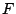

Priorities can be used to define a priority between two functions or between two groups of functions. In both cases the functions involved have to be listed explicitly in the priority declaration. In certain cases, however, it is desirable to define that a single rule has higher or lower priority than all other functions or to explicitly reject certain syntactic constructs. The former is achieved by the attributes prefer and avoid. The latter by the attribute reject.
The use of the reject attribute leads also to improvements in the performance of the parser, see [17] for more implementation details.
If a function  is attributed with prefer and there is a syntactic ambiguity in which it is involved, only the parse using will remain.
If a function is attributed with avoid and there is no ambiguity, then will be used. If there is an ambiguity, then will be immediately removed from the set of ambiguities.
If a function is attributed with reject, then independently of the number of ambiguities, the parse using will be removed. While restrictions[ (Section )]Restrictions only impose limitations on the immediate lookahead that follows a symbol, the reject mechanism can be used to eliminate complicated syntactic structures.
Examples of the use of prefer, avoid and reject in order to solve lexical ambiguities are discussed in Lexical Ambiguities[ Section ]lex-ambiguity. In Context-free Ambiguities[ Section ]cf-ambiguity we will give examples of how to use these attributes to solve context-free ambiguities, such as the famous dangling else problem.